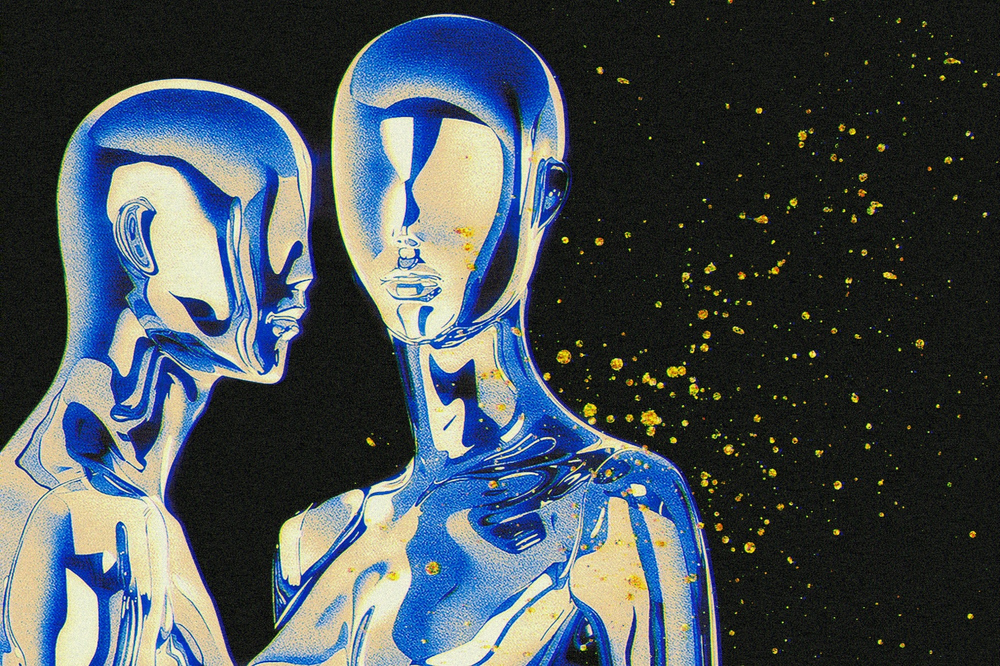
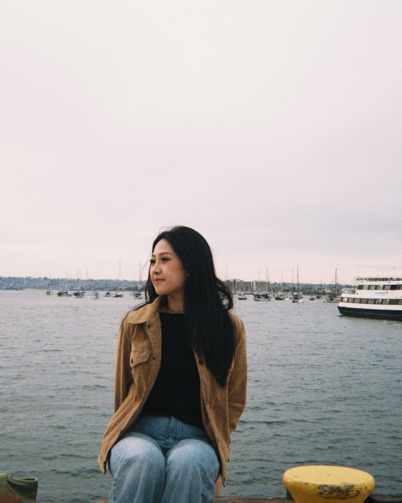

Graphic Design

Explore work Graphic DesignBoston-based multidisciplinary designer
Building thoughtful digital experiences through research, strategy, and interaction.

A Digital Media graduate from Northeastern University with a concentration in Interactive Design. My work lives at the intersection of UX/UI design, visual communication, and front-end thinking.
Across academic and team projects, I’ve worked on website/app design, graphic design, digital marketing, and infographics. These projects allowed me to build practical skills and pushed me to think not just about how something looks, but how it actually works for the people using it.
Let’s work together
Let’s connect and build something thoughtful.
Or reach me directly at grce071@gmail.com